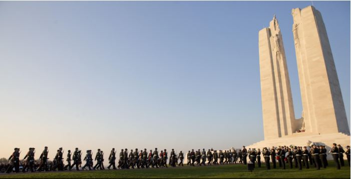
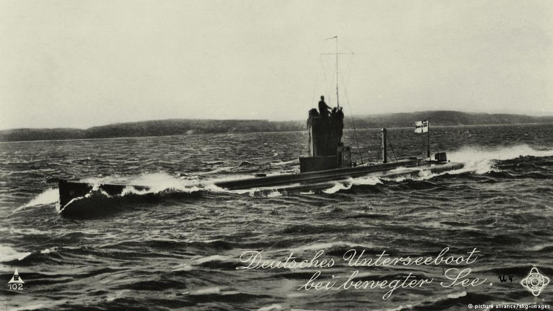
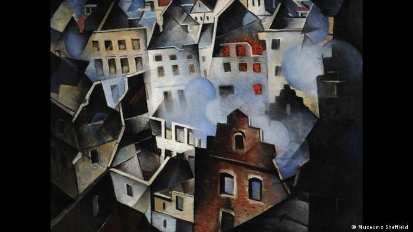

|
As one might expect, the German perspective of and on WWI is quite different from that of Belgians, Frenchmen, Brits, Americans and even some Germans. Today, a hundred years it is less stressful, although not easy, to deal with the factual questions: who, what, where, when; but the how and why are more difficult; and discussing the consequences of the War is still even more difficult. However, DW (Germany’s equivalent to the London or New York Times) is giving it a go as some recent stories show. Stories in chronological order going back in time: most recent story is at the end.  Canada commemorates WWI Battle of Vimy's 100-year anniversary in FranceMarking a small but strategic victory during World War I, the Battle of Vimy has played a pivotal role in Canadian history. Canada's premier has described the event as a turning point for the war and his country. 2017/04/09 Britain, Germany and Belgium commemorate the Battle of PasschendaeleBritain and Belgium's royals, along with German top diplomat Sigmar Gabriel, have commemorated the centenary of the Battle of Passchendaele. Over half a million soldiers were killed in one of World War I's worst battles. 2017/07/31  German WWI submarine discovered off Belgian coastAuthorities in Flanders called it the "best preserved" find from the era. The bodies of all 23 crew members were found aboard the vessel, in a watery grave on the floor of the North Sea. 2017/09/19 Reconciliation at Hartmannswillerkopf in AlsaceDuring World War I, Hartmannswillerkopf in Alsace was the scene of fierce battles between France and Germany. Now a memorial site will serve as a place of remembrance and reconciliation. 2017/11/10 Britain and France remember end of World War I during Armistice Day ceremoniesThe bell of Parliament's Big Ben clock tower in London chimed at 11 a.m. to mark the time World War I ended in 1918. In Paris, wreaths were laid at the Arc de Triomphe, where an eternal flame burns for unknown soldiers.
2017/11/11  'Aftermath: Art in the Wake of World War One' reflects on the brutality of the Great WarMarking 100 years since the end of World War I, a new exhibition at London's Tate Britain explores how artists across Europe responded to the physical and psychological horrors of the "war to end all wars." 2018/06/05 UNESCO World Heritage sites: WWI memorials among the contendersAlmost 30 sites are on the shortlist to receive the highly coveted World Heritage designation. France and Belgium have entered their World War I graveyards into the running. The final decision will be announced in July. 2018/06/24
Dig Hill 80: A day at crowdfunded World War I archaeology digThe villages and hills around Ypres in Belgium were some of the fiercest-fought regions in World War I. One of them, Wijtschate or "Hill 80," has just been excavated thanks to more than €200,000 in crowdfunded donations. 2018/07/13
|

|
Larry Peery (peery@ix.netcom.com) |